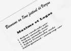
Vent de Folie, sur Vierzon. Une organisation qui a tout prévu : Logos et moi sommes invités tous les deux !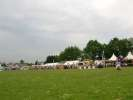
Une belle ligne de barnums, pour Michel Gressier, Abdul de Bombay, Ezéquiel et Juanita du Brésil, Dom, des chinois du... restaurant chinois de Vierzon, l'accueil Vent de Folie, la sono, la cuisine, la buvette, le restaurant... et j'en oublie !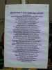
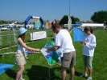
Hugo et Audrey seront là à la première heure. Hugo s'absentera juste un peu pour bosser de 23 h à 04 h 30... Après on s'étonnera de voir des trains rouler en zigzag !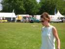
Annaëlle la charmante, elle, se démènera tout au long du week-end pour porter les tables, faire voler les cerfs-volants, servir les frites de Denis, etc. et toujours avec le sourire !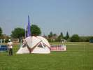
Les tentes se montent, cette tête de redoutable rapace est celle (la tente) de Jean-Claude Veillerobe, venu du Mans.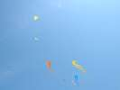
Les troupes dHurricane sont sur le pied de guerre avec une pléiade de deltas (entre autres)...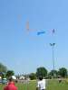
Ça ne se termine pas toujours comme désiré... j'y ai même perdu mon Spiralier (mais c'est un peu ma faute, mon fil est nase) parti vivre sa vie dans la banlieue de Vierzon. Je fais une petite prière tous les jours !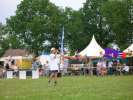
Ils ont même des révos, avec des poignées maison, à pipe, un peu lourdes, mais solides, et il suffit de les poser par terre, le cv ne bouge plus une oreille !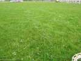
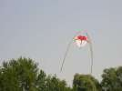
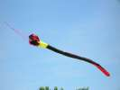
J'ai horreur des queues (pour mes cerfs-volants, je veux dire). Mais celle-ci n'est pas mal, surtout quand le vent la gonfle mieux...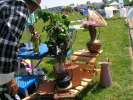
Pour le concours de cerfs-volants "De bric et de broc", Gaby qui ne peut rien faire comme tout le monde a fait un jardin (non, j'ai pas dit "du vent") avec deux briques et deux brocs...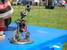
Il est agrémenté d'un robinet perpétuel au rouge de là-bas, et d'un sujet en boulons soudés à bien regarder....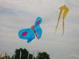
Pour le concours, Jacques présente ce papillon en plastique récupéré, bouteilles de Badoit, rotin, etc.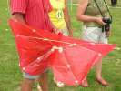
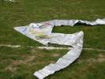
Jean-Marc, lui, a commis ce delta vraiment solide en... intérieur de cubitainer à vin rouge.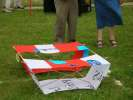
Michel Renouis a découpé et assemblé différentes publicités pour cette originale boite trapézoïdale qui a aussi de bonnes qualités de vol...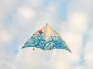
Michel Gressier a amené avec sa roue, son train et plein d'autres choses, ce grand delta à ses couleurs et au dessin dynamique.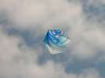
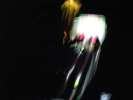
Le soir, le vent tombait, mais après le dîner, il est suffisamment revenu pour rester en l'air si on y était monté ! Mais pour décoller le flow-form de Vierzon, Mouche en a fait des km et des essais !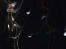
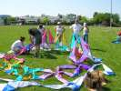
Le lendemain, Thierry et sa bande assemblent un truc démentiel et incompréhensible...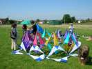
Ah, ça commence à prendre forme. C'est quand même pas une roue ?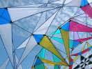
Un détail de la structure pour faire monter le suspense...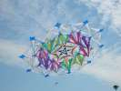
Et l'ensemble décolle majestueusement pour son premier vol... Il est magnifique et il s'appelle le Diadème, bravo à tous !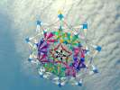
Il a fallu quand même un petit moment pour trouver le bon bridage...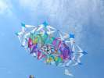
Et il faut pas mal de vent, car il y a une majorité confirmée de trous... Mais le concept de la roue est splendidement renouvelé.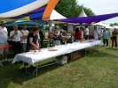
Bon, il faut fêter ça, et Vent de Folie nous convie à un petit apéro...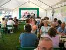
...suivi d'un repas assorti des frites croustillantes de Denis et Jacques (alternativement) !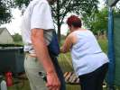
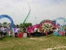
Mais le vent est tombé. Bruno improvise une spectaculaire photo de groupe des cerfs-volants et des cervolistes. Y en a qui en monteront sur les buts de foot pour avoir un meilleur point de vue.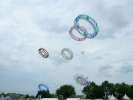
Il lance aussi des essors groupés de roues (et de Diadème, assimilé à la catégorie) à la force des poignets... et des mollets... L'atterrissage est quelquefois un peu mouvementé, mais on a, à chaque fois, démêlé sans casse...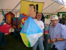
Pour animer le calme, Ezéquiel lance quelques ballons de papier. Des petits, bien sûr ; au Brésil, ils en construisent de 50 m de haut ! Vous ne me croyez pas ? Venez à Cayeux, Carnet de Vol présentera le film.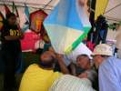
Le plus difficile, c'est l'allumage de l'éponge imbibée de paraffine. On sent l'angoisse sur les visages...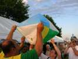
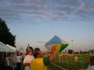
Finalement, le ballon se porte tout seul, ou presque ! C'est le trou qui handicape !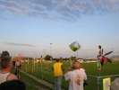
Enfin, il est parti vivre sa vie ! L'atterrissage ? Dieu sait où, et on ne marque pas son nom dessus, pas fou !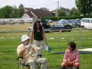
Sylvien fait voler Jessica 12, le modèle indestructible. Il passionne les filles de la télé, avec la constitution de son dévidoir, sans doute !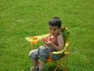
Clément est aussi passionné de cerf-volant...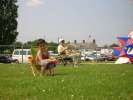
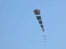
Une création originale, c'est pas si souvent, ça valait la photo, même si celle-ci n'est pas terrible. La loco du train ne serait pas nouvelle, mais l'ensemble, oui....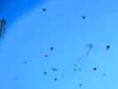
Et même s'il commençait à faire sombre, ça a bien volé !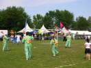
Les Hurricane ont joué un show de fleurs et de papillons !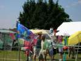
Il y a eu aussi des jardins d'Eole (on peut dire ça, Jean-Claude ?). Les moulinets de Joël et sa plaque à sable, les yeux des Mouchague, les cactus de Fernando et...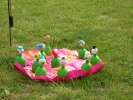
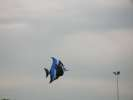
Michel a réalisé (design Robert Van Weers, Nouvelle-Zélande) un splendide poisson d'aquarium tropical, mais un poisson de plusieurs mètres de haut !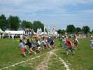
Lâcher de bonbons, avec la nacelle "Yoyo" téléphérique de Jean-Claude, la solution la plus sûre par vent faible...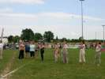
Pour changer, on a fait un lâcher spécial pour les mamans ! Bonne fête à toutes !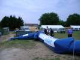